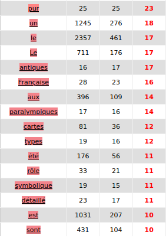

Nous avons créé un fichier dump spécial pour l'analyse sur iTrammeur avec des balises entre chaque contenu de lien. Il à aussi fallu remplacer les signes “>”, “<” et “&” pour que iTrameur ne les considère pas comme des balises. Ces fichiers créés pour chaque langue, contiennent la concaténation des dumps (contenus) de nos URLS.
Dictionnaire iTrammeur du corpus français
Dans le dictionnaire d’iTrammeur on peut voir que le mot jeu est utilisé 2806 fois dans le corpus français. Les mots grammaticaux comme les prépositions ou conjonctions sont en général les mots les plus utilisés dans un corpus. Dans notre corpus il est en deuxième position ce qui montre que le corpus est bien orienté vers le thème des jeux.
Ventilation
Graphique de ventilation de la fréquence absolue du mot "jeu" en fonction de la page
Graphique de ventilation de la fréquence relative du mot "jeu" en fonction de la page
Graphique de ventilation de l'indice de spécificité du mot "jeu" en fonction de la page
Ces trois graphiques montrent la fréquence d’utilisation du mot “jeu” dans les différentes pages web du corpus.
Dans le premier on peut voir la fréquence absolue du mot jeu dans les différentes pages. Par exemple, la page 11 est celle qui contient le plus d'occurrences du mot “jeu”.
Dans le second, on peut voir la fréquence relative du mot jeu dans les différentes pages. Ce graphique est plus intéressant que le premier car les pages ont des tailles différentes. La comparaison entre les pages est donc possible, on peut par exemple comparer la fréquenc d’utilisation du mot dans les pages 11 et 39.
Dans le troisième, il s’agit de l’indice de spécificité du mot jeu en fonction de la page web. Ce graphique nous donne des indications sur comment le mot “jeu” est utilisé dans ces pages. +
Cooccurrents
Le site iTrammeur nous permet de faire une analyse des cooccurrents de notre mot. Cela nous donne un aperçu des contextes dans lesquels le mot “jeu” est utilisé. Cette recherche est faite avec le fichier dump créé pour iTrammeur. Le fichier contexte pour iTrameur aurait pu être utilisé afin d’avoir une analyse plus précise mais nous avons choisi le fichier dump car nous pouvions tester les différents paramètres d’iTrameur et ajuster notre analyse plus facilement.
Tableau des cooccurrences avec leur indices de spécificité(page1)

Tableau des cooccurrences avec leur indices de spécificité(page2)
Tableau des cooccurrences avec leur indices de spécificité(page3)
Dans le tableau ci-dessus, nous pouvons voir les mots qui cooccurent avec “jeu” trier selon leur indice de spécificité.
Graphique de réseau des cooccurrence avec leur indices de spécificités
Les mots choisis dans ce graphique et présents dans le tableau sont des cooccurrents du mot “jeu” qui sont placés 10 termes avant ou 10 termes après celui-ci et qui ont un indice de spécificité supérieur à 10. Les termes affichés sont les mots qui sont retrouvés avec “jeu” le plus souvent. On retrouve des mots outils comme “le”, “les”, “un”, “des”... qui nous donne des indications sur son utilisation grammaticale. Dans les mots ayant un indice de spécificité le plus élevé, on trouve des mots lexicaux comme “Olympiques”, “Paralympique”, “société” , “vidéo”, “hasard”, “argent”.
Dans ce graphique ci-dessous vous pouvez voir le même graphique mais avec un indice de spécificité minimum de 5. Un indice inférieur montre un plus grand nombre de mots moins spécifique aux contextes d’utilisation de “jeu”. Le graphique est plus difficile à lire et les thèmes plus larges.
Il est cependant intéressant de remarquer certains thèmes qui ressortent de ce graphique et qui n'apparaissent pas dans celui au-dessus. Par exemple, des termes comme “industrie”, “marché”, “régulation” … ou des termes comme “Mickey”, “pocker”, “roulette”.
Graphique de réseau des cooccurrence avec leur indices de spécificités (minimum 5)
Construction
On retrouve fréquemment le mot “jeu” dans une construction “Nom de Nom”. Cette construction est très fréquente pour les types de jeux. On le voit avec les formes “jeu de société”, “jeu de cartes”, “jeu d’horreur”, “jeu de sept famille” etc.
Cette construction explique pourquoi les prépositions “de”, “des”, “d’” sont en tête des cooccurrences et dans les mots les plus nombreux dans le dictionnaire.